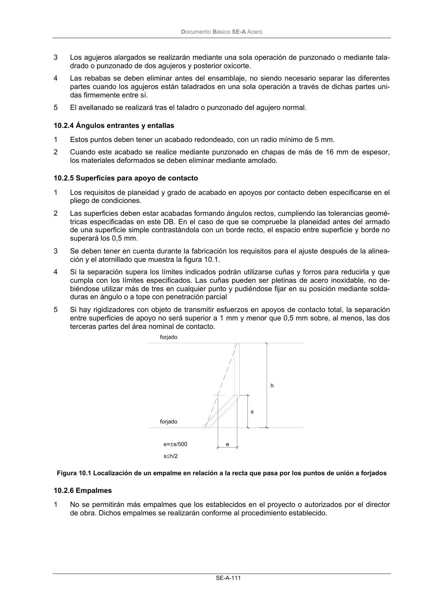

DB-SE-A · 10.2.4 Ángulos entrantes y entallas · 10.2.5 Superficies para apoyo de contacto · 10.2.6 Empalmes · versión 2007-10-23
SHA256: 9ed9ea694aabfbda3bfbbef40dfe9223fde05d13c35bc2ba9751e5a96a22a64f · página física 113 de 168 · métodos de encabezado
solo si están cotejados.
Documento · ← p. 112 · p. 114 →
Formatos: Markdown · JSON de bloques · PDF p. 113 · imagen PNG
Documento Básico SE-A Acero SE-A-111 3 Los agujeros alargados se realizarán mediante una sola operación de punzonado o mediante tala- drado o punzonado de dos agujeros y posterior oxicorte. 4 Las rebabas se deben eliminar antes del ensamblaje, no siendo necesario separar las diferentes partes cuando los agujeros están taladrados en una sola operación a través de dichas partes uni- das firmemente entre sí. 5 El avellanado se realizará tras el taladro o punzonado del agujero normal. 10.2.4 Ángulos entrantes y entallas 1 Estos puntos deben tener un acabado redondeado, con un radio mínimo de 5 mm. 2 Cuando este acabado se realice mediante punzonado en chapas de más de 16 mm de espesor, los materiales deformados se deben eliminar mediante amolado. 10.2.5 Superficies para apoyo de contacto 1 Los requisitos de planeidad y grado de acabado en apoyos por contacto deben especificarse en el pliego de condiciones. 2 Las superficies deben estar acabadas formando ángulos rectos, cumpliendo las tolerancias geomé- tricas especificadas en este DB. En el caso de que se compruebe la planeidad antes del armado de una superficie simple contrastándola con un borde recto, el espacio entre superficie y borde no superará los 0,5 mm. 3 Se deben tener en cuenta durante la fabricación los requisitos para el ajuste después de la alinea- ción y el atornillado que muestra la figura 10.1. 4 Si la separación supera los límites indicados podrán utilizarse cuñas y forros para reducirla y que cumpla con los límites especificados. Las cuñas pueden ser pletinas de acero inoxidable, no de- biéndose utilizar más de tres en cualquier punto y pudiéndose fijar en su posición mediante solda- duras en ángulo o a tope con penetración parcial 5 Si hay rigidizadores con objeto de transmitir esfuerzos en apoyos de contacto total, la separación entre superficies de apoyo no será superior a 1 mm y menor que 0,5 mm sobre, al menos, las dos terceras partes del área nominal de contacto. Figura 10.1 Localización de un empalme en relación a la recta que pasa por los puntos de unión a forjados 10.2.6 Empalmes 1 No se permitirán más empalmes que los establecidos en el proyecto o autorizados por el director de obra. Dichos empalmes se realizarán conforme al procedimiento establecido.
